Daily logic puzzles
One puzzle a day.Exactly one solution.
Small logic games from ARLing. Each puzzle is generated fresh every day, checked by the program to have exactly one solution, and runs in your browser. No account, no ads, no infinite feed.
-
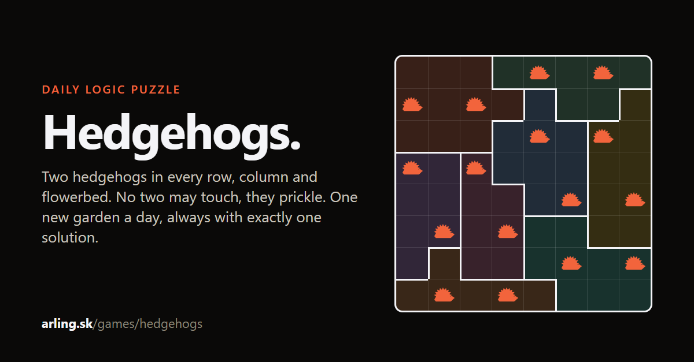
Hedgehogs
Two hedgehogs in every row, column and flowerbed. No two may touch, they prickle.
Play today's garden How to play
How Hedgehogs runs
Easy on Monday, hardest on Sunday, a new garden at midnight. Hints that explain, a two-step Check, practice sets and a free archive going back a year.
-
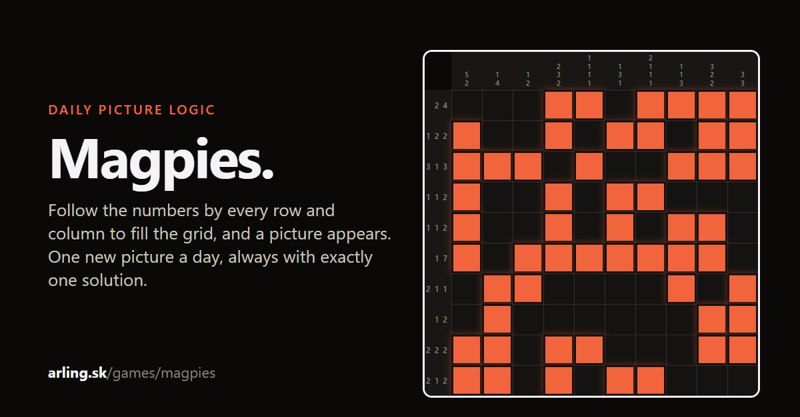
Magpies
A picture logic puzzle (nonogram). Follow the numbers by every row and column to fill the grid and reveal what the magpies brought home.
Play today's picture How to play
How Magpies runs
Easy on Monday, hardest (fifteen by fifteen) on Sunday, a new picture at midnight. Hints that explain, a two-step Check, practice sets and a free archive going back a year.
-
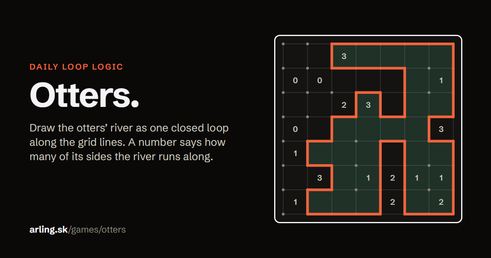
Otters
A single loop puzzle. Draw the otters' river along the grid lines so that every number says how many sides of that patch the river runs along.
Play today's river How to play
How Otters runs
Easy on Monday, hardest (nine by nine) on Sunday, a new river at midnight. Hints that explain, a two step Check, practice sets and a free archive going back a year.
-
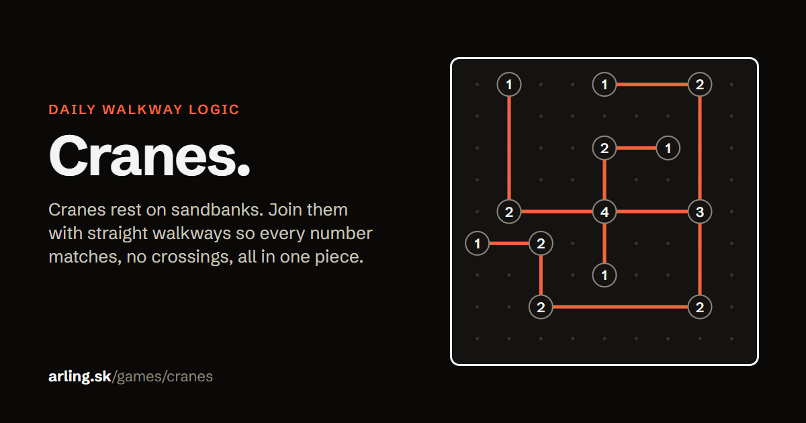
Cranes
Cranes rest on sandbanks. Join them with straight walkways so that every sandbank has as many walkways as its number, at most two between the same pair, no crossings, and every sandbank can be reached from every other.
Play today's sandbanks How to play
How Cranes runs
Easy on Monday, hardest (thirteen by thirteen) on Sunday, new sandbanks at midnight. Hints that explain, a two step Check, practice sets and a free archive going back a year.
-
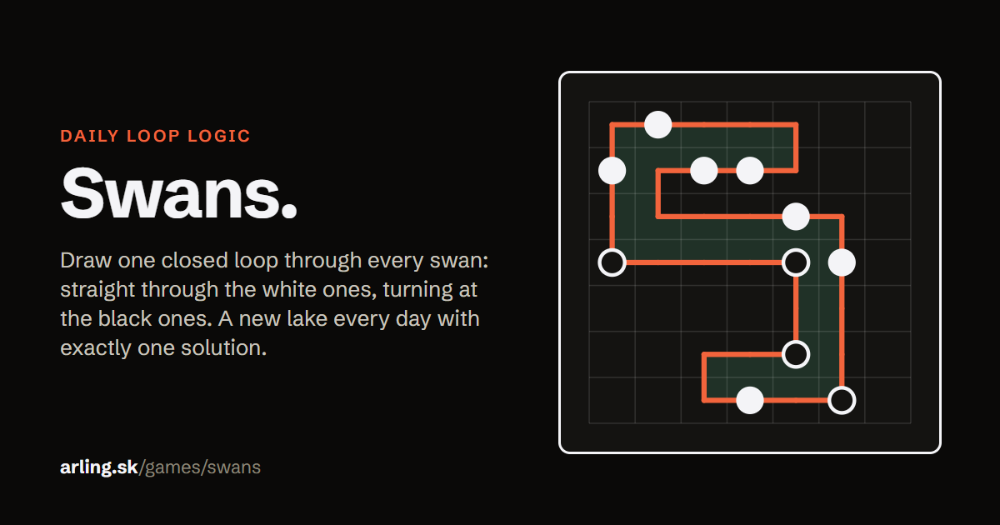
Swans
Draw one loop through every swan. At a white swan the loop goes straight and turns just before or after; at a black swan it turns and goes straight on both sides.
How Swans runs
Easy on Monday, hardest (ten by ten) on Sunday, a new lake at midnight. Hints that explain, a two step Check, practice sets and a free archive going back a year.
-
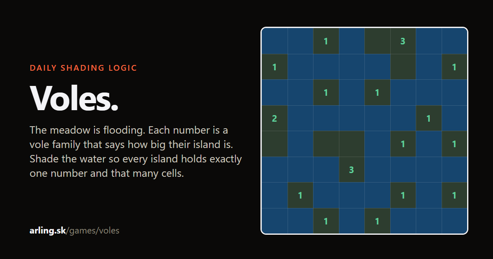
Voles
The meadow is flooding. Each number is a vole family and says how big their island is. Shade the water so every island has exactly one number, islands never touch by a side, all the water connects and no two by two block is all water.
Play today's meadow How to play
How Voles runs
Easy on Monday, hardest (twelve by twelve) on Sunday, a new meadow at midnight. Hints that explain, a two step Check, practice sets and a free archive going back a year.
-
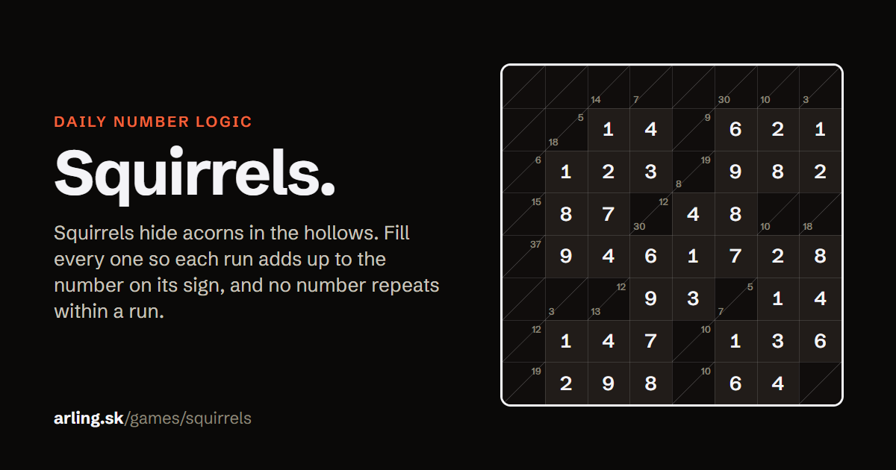
Squirrels
Squirrels hide acorns in the hollows. Each sign says how many acorns are in the run of hollows to its right or below it; every hollow holds 1 to 9 and no number repeats within a run.
How Squirrels runs
Easy on Monday, hardest (twelve by twelve) on Sunday, a new tree at midnight. Hints that explain, a two step Check, practice sets and a free archive going back a year.
-
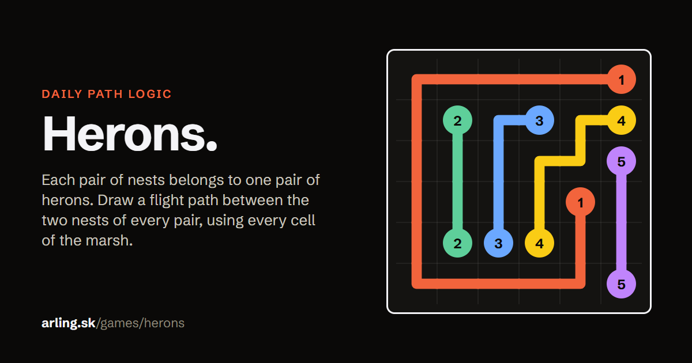
Herons
Each pair of nests belongs to one pair of herons. Draw a flight path between the two nests of every pair. Paths run through neighbouring cells, never cross, and every cell of the marsh is used by exactly one path.
Play today's marsh How to play
How Herons runs
Easy on Monday, hardest (eight by eight) on Sunday, a new marsh at midnight. Hints that explain, a two step Check, practice sets and a free archive going back a year.
-
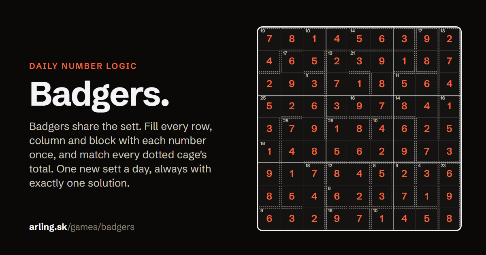
Badgers
Badgers share the sett. Fill the grid so that every row, column and block has each number once. The dotted cages show how many badgers live there in total, and no number repeats inside a cage. Nothing is given at the start.
How Badgers runs
Six by six on Monday and Tuesday, nine by nine from Wednesday, hardest on Sunday, a new sett at midnight. Hints that explain, a two step Check, practice sets and a free archive going back a year.
-
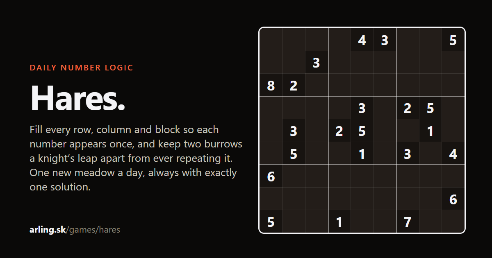
Hares
Fill the meadow so that every row, column and block has each number once. Hares leap like a chess knight: two burrows a knight's leap apart never hold the same number. From Friday on, hares also refuse to sit next to the same number in any direction, corners included.
Play today's meadow How to play
How Hares runs
Six by six on Monday and Tuesday, nine by nine from Wednesday, hardest on Sunday, a new meadow at midnight. Hints that explain, a two step Check, practice sets and a free archive going back a year.
-
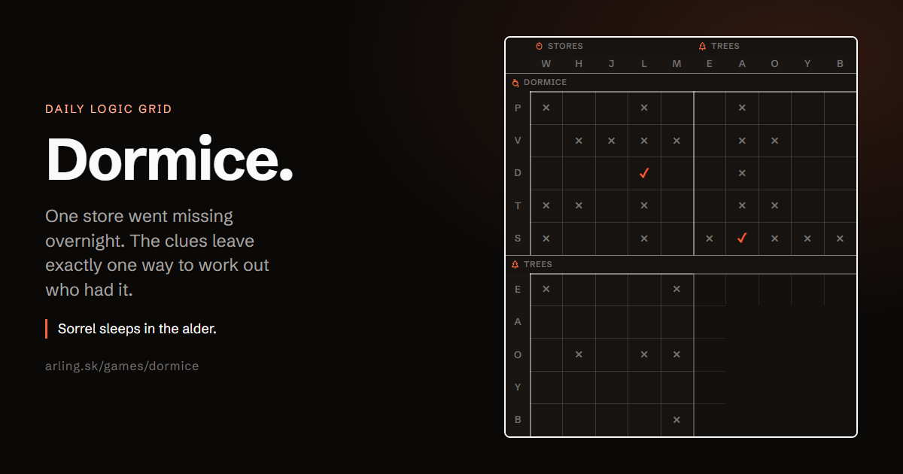
Dormice
A daily logic grid. Every dormouse keeps one store in one tree and woke in one week; the numbered clues leave exactly one way to match them all. Read a clue, tick or cross a cell, cross off the clue.
How Dormice runs
Easy on Monday, hardest on Sunday (the hardest days ask you to test one assumption), a new case at midnight. Auto cross fills the crosses a tick implies, hints explain the next step, Check reports mistakes first as a count, practice sets and a free archive going back a year.
Known elsewhere as: Star Battle (Hedgehogs), Nonogram (Magpies), Slitherlink (Otters), Hashi (Cranes), Masyu (Swans), Nurikabe (Voles), Kakuro (Squirrels), Numberlink (Herons), Killer Sudoku (Badgers) and anti-knight Sudoku (Hares).
Ten games so far, every one generated with exactly one solution. Prefer paper? Ten puzzle books (PDF, 100 puzzles each, free samples). Write to andrej@arling.sk if you want to be told when they arrive.